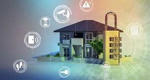

What is Safety & Security in smart homes
Definition :
A comprehensive system of smart devices and monitoring tools that enhance security and protect residents from harm.
Benefit :
Provides peace of mind by deterring intruders, detecting threats, and enabling remote monitoring and control, ultimately creating a safer and more secure living environment.
Discription & Application :
- Access controll \ Smart locks :
Keyless entry smart with facial recognition, fingerprint scan, remote access, temporary codes for guests, auto-locking features, and integration with other security devices.
One of the most obvious ways to apply smart technology to home security is with upgraded door locks. Through a phone app, you can lock and unlock your door, create virtual keys for guests, and keep track of who has entered and exited your home.
Smart Door Locks w biometrics.
Smart Door Locks e.g NFC enabled.
- Smart doorbell :
A video doorbell with facial recognition, package detection, two-way talk, and cloud storage for enhanced security and convenience.
- Smart security cameras :
High-resolution outdoor and indoor security with features like night vision, motion detection, facial recognition, two-way talk, and server storage for continuous monitoring and recording.
Monitor outdoor spaces with high-resolution cameras equipped with night vision and motion detection. Store recordings locally or in the cloud for evidence or review.
Weatherproof outdoor security cameras strategically placed to monitor the perimeter of the villa, driveways, and entry points, providing 24/7 surveillance.
- Motion sensors :
Indoor and outdoor motion sensors, positioned strategically throughout the villa to trigger alerts, automate lighting, and enhance security.
- Intrusion Detection System :
A professionally monitored alarm system with cellular backup, integrated with smoke detectors, carbon monoxide detectors, glass break sensors, SOS emergency alert (panic button), and door/window sensors for comprehensive protection.
Monitor activity inside your home, check on pets or children, and deter potential break-ins.
The system links directly with your internet router so it can detect even the smallest change in temperature or light level – alerting you immediately if anything out-of-the-ordinary occurs. A great option is the Ring Alarm 8-Piece Kit which allows users control over its features using voice commands from anywhere inside (or outside) their homes!
Other features of intelligent alarm systems include :
1. Modern motion sensors use artificial intelligence to differentiate between typical home movements (like a pet wandering) and potential threats, reducing false alarms.
2. Some systems can recognize registered household members. If an unfamiliar face or voice is detected, the system may trigger an alert.
3. Using a user’s smartphone location, the system can arm or disarm itself. For example, it can automatically arm when the homeowner leaves a predefined perimeter and disarm when they return.
4. Apart from break-ins, intelligent alarms can detect environmental threats like smoke, carbon monoxide, water leaks, or temperature changes, notifying homeowners of potential hazards.
5. Intelligent systems can connect with other devices in the home. If a security breach is detected, the system might turn on all lights, play loud noises on connected speakers, or even lock all doors.
6. Over time, some smart systems learn the daily routines and habits of the household, making them more adept at identifying unusual or suspicious activities.
7. Users can monitor their homes security status in real-time via smartphone apps. They can arm, disarm, or modify the system settings from anywhere in the world.
8. Users can define specific “zones” in their cameras view for heightened monitoring, like a window or a particular entryway. The system will pay special attention to these zones and notify the user of any movement or activity in those areas.
- Window management :

Receive alerts when doors or windows are opened or closed.
Trigger alarms in case of unauthorized entry.
Automate lighting and climate control based on door/window status.
- Fire Alarm System Integration :
Integrating your fire alarm system with home automation allows you to receive instant alerts and notifications on multiple devices. By connecting your fire alarm to your smartphone or smart home hub, you can get real-time updates during a fire emergency, enabling prompt action and evacuation if needed.